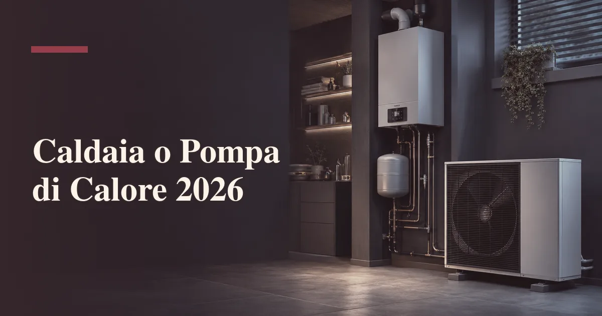

Caldaia a condensazione o pompa di calore? Per confrontarle bisogna separare tre domande: quale soluzione è tecnicamente adatta all'edificio, quanto costa installarla e quanto potrebbe costare utilizzarla. Una tecnologia con un buon risultato in un caso può avere condizioni meno favorevoli in un altro. Superficie della casa, nome del modello e prezzo di acquisto non bastano a produrre una risposta affidabile.
Questa guida propone un confronto riproducibile, con formule, scenari inventati e una scheda da completare insieme al tecnico. Non presenta tariffe correnti né promette un tempo di rientro. Il suo obiettivo è aiutarti a leggere due preventivi senza confondere energia termica, energia elettrica, combustibile e costi fissi. Per scegliere l'impianto serve comunque una valutazione professionale della casa e dei servizi richiesti.
Prima il servizio: cosa devono fare i due sistemi?
Scrivi se il confronto riguarda solo riscaldamento, anche acqua calda oppure un intervento che comprende raffrescamento. Una caldaia e una pompa di calore proposte con servizi differenti non hanno importi direttamente confrontabili. Se la seconda soluzione richiede nuovi terminali o un accumulo sanitario, queste opere devono essere visibili. Se una delle due conserva componenti esistenti, indica quali e in quali condizioni.
Stabilisci anche il livello di comfort assunto: locali riscaldati, fasce di utilizzo e temperatura desiderata. Un sistema che serve meno stanze o per meno ore può consumare meno senza essere più efficiente. Il confronto deve riferirsi allo stesso risultato atteso. Altrimenti il vantaggio apparente potrebbe dipendere da una rinuncia al servizio che nessuno ha esplicitato.
Fabbisogno termico: il numero dal quale partire
Chiamiamo Q l'energia termica richiesta nel periodo considerato. Nell'esempio useremo kilowattora termici. Non ricavarla semplicemente moltiplicando la superficie per un numero trovato in una tabella generica. Per un caso reale servono dati dell'edificio, impianto, clima e utilizzo, letti dal professionista incaricato. Anche le bollette storiche sono un elemento da interpretare, perché possono comprendere acqua calda e altri usi del combustibile.
Quando una stima riporta un solo numero, chiedi come sia stato ottenuto e che cosa includa. Il valore può essere ragionevole, ma deve avere un perimetro. Se sono previsti nuovi serramenti o interventi sull'involucro, la valutazione deve considerarne la configurazione effettiva. Non confrontare il generatore nuovo su una casa riqualificata con la caldaia su una casa precedente senza segnalare la differenza.
Rendimento della caldaia e prestazione stagionale della pompa
Per l'esercizio, il combustibile richiesto è Q diviso il rendimento stagionale ipotizzato della caldaia. Per la pompa di calore, l'energia elettrica è Q diviso il rapporto stagionale ipotizzato del sistema. Le due grandezze non sono intercambiabili: una mette in relazione calore e combustibile, l'altra calore ed elettricità. Il risultato va poi moltiplicato per il prezzo unitario pertinente a ciascun vettore.
Le condizioni di lavoro influenzano le prestazioni. Caleffi, nell'approfondimento su efficienza e convenienza, illustra il ruolo delle temperature e il confronto tra sistemi. Per leggere i valori dichiarati dei prodotti puoi usare anche la nostra guida a SCOP, mandata e condizioni di prova. Un indicatore normalizzato serve al confronto tecnico, ma non coincide automaticamente con il risultato misurato nell'abitazione.
Chiedi se la stima include ausiliari, integrazioni elettriche e servizi accessori. Se una proposta li comprende e l'altra no, la differenza va resa esplicita prima del calcolo economico. Evita di inserire il COP di un singolo punto di prova come se descrivesse un'intera stagione. Le condizioni cambiano e il sistema comprende più della sola macchina.
Leggere i prezzi senza usare la bolletta totale come tariffa
Dividere l'importo dell'intera bolletta per i consumi produce un costo medio che può includere quote fisse e altre componenti. Per stimare la variazione dovuta a un consumo aggiuntivo occorre distinguere ciò che cambia con l'energia da ciò che resta dovuto. La spiegazione di ARERA sullo scontrino dell'energia aiuta a leggere la separazione fra quote di consumo e altre voci.
In un confronto reale usa il costo variabile pertinente alle tue forniture, con un trattamento fiscale coerente, e aggiungi separatamente le eventuali variazioni delle quote fisse. Se il gas resterà attivo per altri usi, non considerare automaticamente eliminabili tutti i suoi costi. Se la parte elettrica richiede una diversa potenza disponibile, chiedi come questo cambi il quadro completo. Sono elementi da verificare, non vantaggi già acquisiti.
Il gas può essere fatturato in metri cubi standard, mentre il calcolo tecnico può usare energia del combustibile. Occorre una conversione coerente con i documenti e il caso considerato. Non applicare un coefficiente casuale per far tornare il foglio. Nell'esercizio seguente useremo direttamente un prezzo per kilowattora di combustibile, proprio per rendere leggibile l'aritmetica senza attribuire un fattore universale alle forniture reali.
Esempio completo con quattro scenari
Supponiamo Q pari a 12.000 kilowattora termici, rendimento della caldaia pari a 0,90 e costo variabile del combustibile pari a 0,10 euro per kilowattora. Sono ipotesi didattiche, non quotazioni di mercato né prestazioni garantite. L'energia del combustibile richiesta sarebbe 12.000 diviso 0,90, cioè circa 13.333 kilowattora. Il costo variabile risultante sarebbe circa 1.333 euro.
Per la pompa di calore ipotizziamo inizialmente 0,30 euro per kilowattora elettrico. Con un rapporto stagionale di 3 il consumo sarebbe 4.000 kilowattora e il costo 1.200 euro. Con un rapporto di 2,4 il consumo salirebbe a 5.000 kilowattora e il costo a 1.500 euro. Il medesimo fabbisogno produce risultati economici diversi quando cambia una premessa tecnica.
| Scenario illustrativo | Rapporto stagionale pompa | Prezzo elettrico ipotizzato | Costo variabile calcolato |
|---|---|---|---|
| A | 3,0 | 0,30 €/kWh | 1.200 € |
| B | 2,4 | 0,30 €/kWh | 1.500 € |
| C | 3,0 | 0,24 €/kWh | 960 € |
| D | 3,0 | 0,36 €/kWh | 1.440 € |
Nei quattro casi la caldaia dell'esempio resta a circa 1.333 euro di costo variabile. Il confronto non include investimento, manutenzione, quote fisse, interventi impiantistici, incentivi o variazioni future dei prezzi. Non può quindi assegnare una convenienza complessiva. Mostra però perché non sia corretto promettere un risparmio identico a proprietari con tariffe e condizioni di lavoro differenti.
La soglia di pareggio del solo costo variabile
Con le definizioni utilizzate, il rapporto stagionale di pareggio è prezzo elettrico moltiplicato per rendimento della caldaia, diviso prezzo del combustibile. Nell'esempio: 0,30 per 0,90 diviso 0,10 uguale 2,7. A quella soglia i due costi variabili risultano uguali. Sopra o sotto cambia il risultato del confronto, mantenendo ferme tutte le altre ipotesi.
Questa formula non sceglie la macchina e non prevede il rendimento reale della casa. Non include inoltre le differenze di investimento o gestione. È utile per discutere quanto sia sensibile la conclusione a un dato. Se una proposta risulta favorevole soltanto con una prestazione molto ottimistica, chiedi un secondo scenario e il motivo per cui quella prestazione dovrebbe essere plausibile nel tuo impianto.
Radiatori, clima e temperature: dove chiedere una verifica
La compatibilità con i terminali richiede una valutazione locale per locale. Il professionista deve confrontare fabbisogno e resa alle temperature previste, considerando distribuzione e regolazione. Una risposta basata soltanto sulla presenza dei termosifoni è incompleta. Chiedi quali adattamenti siano necessari e come incidano sul costo e sul calendario dei lavori.
Per il clima, chiedi le condizioni di progetto e i dati della macchina pertinenti a quelle condizioni. Non basta sapere che un modello può funzionare a una temperatura molto bassa: occorre capire potenza disponibile, assorbimenti e ruolo di eventuali integrazioni. Evita sia l'idea che il freddo escluda sempre la pompa di calore, sia la promessa che ogni macchina mantenga le stesse prestazioni in qualsiasi situazione.
Se il tecnico propone una soluzione ibrida, chiedi come verrà gestita e quali servizi svolgeranno i generatori. Due apparecchi presenti nello stesso locale non descrivono da soli una strategia di funzionamento. La proposta deve chiarire controllo, perimetro, manutenzione e condizioni del confronto. Anche questa soluzione va valutata sul caso, senza considerarla un compromesso automaticamente migliore.
Fotovoltaico: usa profili compatibili con la stagione
La produzione annua del fotovoltaico non coincide necessariamente con l'energia utilizzabile dalla pompa di calore durante il riscaldamento. Orari, stagione e altri consumi cambiano il contributo effettivo. Chiedi come sia stata stimata la quota utilizzata e quali dati la sostengano. Non sottrarre l'intera produzione annuale dai consumi invernali soltanto perché i due totali hanno la stessa unità.
Nel confronto economico, l'energia impiegata dall'impianto ha inoltre un valore alternativo che dipende dal caso. Un eventuale accumulo introduce costi, perdite e condizioni proprie. Per leggere queste differenze puoi usare la guida alle batterie di accumulo e ai cinque criteri di scelta. Mantieni separati i risultati dei singoli interventi e verifica di non attribuire lo stesso risparmio a due investimenti diversi.
Investimento iniziale e costi nel tempo
Richiedi preventivi con lo stesso elenco di servizi: generatore, componenti, adattamenti, opere accessorie, avviamento e documenti. Chiedi anche durata e condizioni delle assistenze eventualmente proposte. I costi di manutenzione futuri devono essere riportati come ipotesi documentate, non come cifre certe per tutta la vita dell'impianto. Sostituzioni e imprevisti possono modificare la spesa.
Se vuoi confrontare il costo complessivo su un periodo, somma investimento e costi annuali ipotizzati, indicando periodo, prezzi e voci incluse. Per analisi più articolate chiedi una valutazione professionale che consideri anche il valore temporale degli importi e l'incertezza. Il semplice tempo di rientro non racconta tutte le caratteristiche economiche della scelta e non sostituisce la verifica tecnica.
Gli incentivi vanno verificati sui portali ufficiali e con i professionisti che seguono l'intervento. Requisiti, soggetto, edificio, spese e procedure possono cambiare il risultato. Non considerare un contributo come già ottenuto né riportare una percentuale generica come riduzione certa del preventivo. Conserva separati costo lordo dell'intervento, ipotesi di agevolazione e documentazione necessaria per valutarla.
Un confronto leggibile da portare al tecnico
Il modello CSV caldaia e pompa di calore contiene gli scenari numerici della guida e campi per le tue ipotesi. È un foglio originale del Giornale Edile, senza macro e senza collegamenti a fornitori. I valori di esempio sono etichettati come illustrativi. Sostituiscili soltanto con dati coerenti e conserva la fonte di ciascun numero utilizzato.
Per ogni scenario annota anche le informazioni mancanti. Se non conosci il fabbisogno, non riempire il campo con il consumo elettrico totale della casa. Se non conosci il rendimento stagionale, chiedi come viene stimato. La scheda deve rendere visibili i dubbi, non nasconderli dietro una formula. È proprio questo che permette un confronto utile con chi dovrà progettare e installare.
Cinque domande prima della decisione
Chiedi quale fabbisogno sia stato considerato e quali servizi comprenda; quali temperature servano ai terminali; quali opere siano necessarie; quali componenti di costo cambino davvero; come vari il risultato con prezzi e prestazioni meno favorevoli. Le risposte devono riferirsi alla tua abitazione. Un preventivo può essere sintetico, ma i presupposti della scelta devono essere comprensibili.
La decisione finale unisce fattibilità, comfort, investimento e gestione. Se uno di questi aspetti resta aperto, concorda un approfondimento prima dell'ordine. Il confronto migliore non è quello con il numero più ottimista: è quello che puoi ricostruire, aggiornare e discutere senza scoprire ipotesi nascoste dopo l'installazione.
Tre errori di lettura da correggere prima di firmare
Il primo è confrontare un investimento completo con il prezzo del solo generatore. Chiedi un riepilogo delle opere che rimangono da quotare e specifica chi le sosterrà. Se una proposta richiede un adeguamento elettrico ancora da verificare, quel punto deve restare aperto nel confronto. Non aggiungere un costo inventato per chiudere la tabella e non considerarlo nullo perché manca un preventivo.
Il secondo errore è usare lo stesso rendimento per servizi differenti senza verificarlo. Riscaldamento e acqua calda possono richiedere condizioni diverse; un valore unico deve essere motivato nel perimetro della stima. Chiedi una separazione quando aiuta a capire il risultato. Un totale apparentemente semplice può nascondere proprio il servizio che modifica la convenienza della soluzione proposta.
Il terzo errore è mantenere fisse tutte le ipotesi per un periodo lungo senza mostrarne l'incertezza. Per una prima discussione prepara uno scenario di riferimento e due variazioni ragionevoli, definite con il tecnico. Cambia una premessa alla volta, così puoi vedere quale influenza la conclusione. Se il vantaggio scompare con una piccola variazione, non significa automaticamente che la scelta sia sbagliata: significa che la decisione richiede più attenzione a quel dato e agli altri motivi dell'intervento.
Un riepilogo che può essere aggiornato
Conserva il risultato insieme ai dati originari, non soltanto come schermata del totale. Per ogni ipotesi indica fonte, data e referente: relazione sul fabbisogno, preventivo delle opere, condizioni della fornitura e criterio della prestazione stagionale. Se uno di questi elementi cambia, saprai quale parte ricalcolare senza ricostruire tutto il confronto.
Quando condividi il foglio con la famiglia o con un amministratore, accompagna i numeri con una frase sul perimetro: «questo scenario riguarda il solo costo variabile del riscaldamento». È un'informazione essenziale per non trasformare un esercizio parziale in una previsione della spesa totale. La chiarezza del riepilogo permette di discutere la scelta anche a chi non ha partecipato ai primi incontri.
Domande frequenti
La pompa di calore costa sempre meno nell'uso?
No. Il risultato dipende da prestazione stagionale, fabbisogno, prezzi e perimetro dei costi considerati. Chiedi scenari con ipotesi esplicite. Il confronto del solo consumo non determina da solo la convenienza complessiva dell'investimento.
Posso usare il COP del catalogo per il consumo annuo?
Un COP riferito a un punto di prova non descrive l'intera stagione. Per una stima annuale serve una valutazione coerente del sistema e dei servizi. I dati dichiarati vanno letti con le condizioni alle quali si riferiscono.
Con il fotovoltaico devo considerare l'elettricità gratuita?
Occorre valutare quando viene prodotta, quanta è utilizzabile e quale valore avrebbe in alternativa. Il totale annuo non basta. Evita di contare la stessa energia e lo stesso beneficio più volte in interventi differenti.